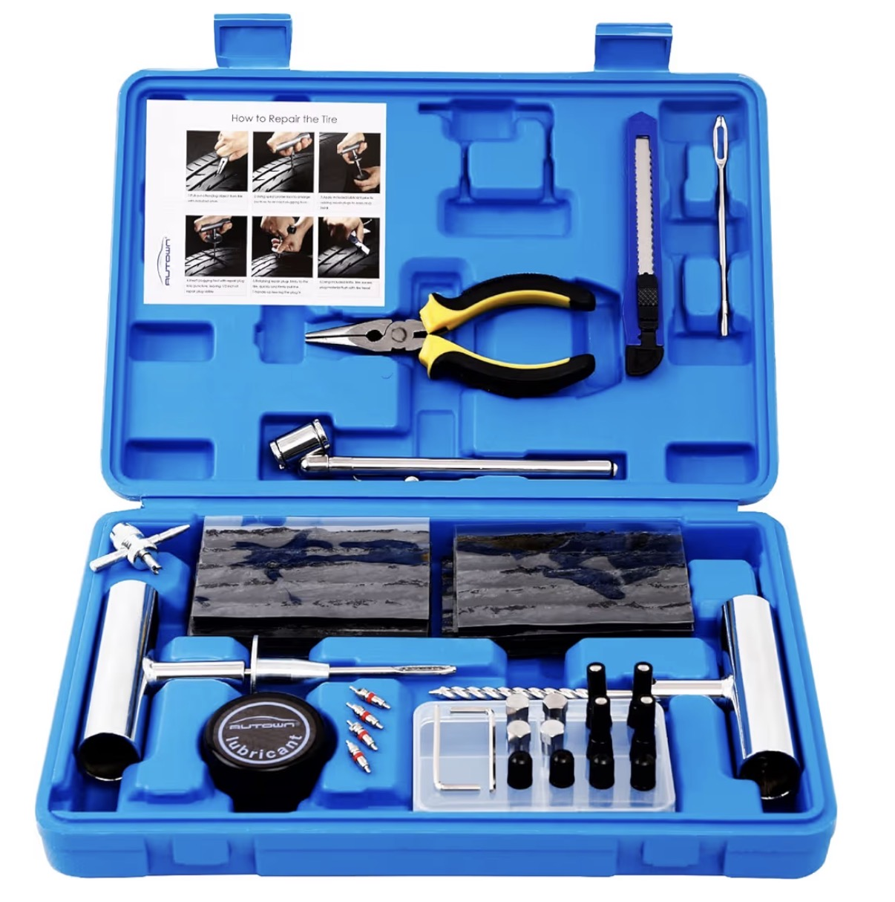

Ein platter Reifen bedeutet oft Stress und hohe Kosten. In der Werkstatt zahlst du schnell 50€ bis 150€ – nur für eine einfache Reparatur. Dabei kannst du das Problem selbst lösen – in wenigen Minuten.

🔥 Set jetzt ansehen & selbst reparieren
1. Loch im Reifen finden
2. Stelle reinigen
3. Reparaturstreifen einsetzen
4. Abdichten und fertig
5. Weiterfahren
Du sparst Geld, bist unabhängig von Werkstätten und kannst Pannen sofort selbst beheben. Das Set passt in jedes Auto und ist jederzeit einsatzbereit.
🚗 Fehler selbst auslesen
🔧 Reifen selber wechseln
👉 Zurück zu allen Auto Tools